Core · Video walkthrough
Configure check-in defaults, overrides and per-call timers
Create timer rules, understand their effect, enable one practice call, and verify a check-in and its saved history.
Before you begin
- Department administration permission in an isolated training department.
- A reviewed training recipient and your department reporting procedure.
- Warning and overdue transitions are explained but are not demonstrated in this exercise.
Chapters
- Find the check-in settings
- Choose automatic or per-call enablement
- Create a Personnel default
- Verify the saved default and its impact
- Create a call-type override
- Compare saved overrides with the default
- Prepare an identifiable training call
- Choose the training recipient
- Enable timers for the individual call
- Verify the override on the live call
- Add a check-in note
- Read back the saved entry
- Close the completed practice call
- Verify closure and retain the history
Watch the walkthrough
Step 1
Find the check-in settings
Start in Department Settings. Open Calls & Dispatch and choose Call & Dispatch Settings. This lesson follows the complete setup of a Personnel check-in rule, then tests it on one fictional call. Check-ins help coordinators organize agreed reporting updates, including community care visits and mental health response assignments. Department administrators configure the rules; operators use the resulting timers and history.

Practice
Find Call & Dispatch Settings using the administrator menu.
Step 2
Choose automatic or per-call enablement
Find Check-In Timer Settings. Auto-Enable Check-In Timers for New Calls controls whether new calls start with timers enabled. It is off in this training department. We leave it off and explicitly enable one practice call later. This separates department-wide enablement from the reporting interval and from the decision to use timers on an individual incident.
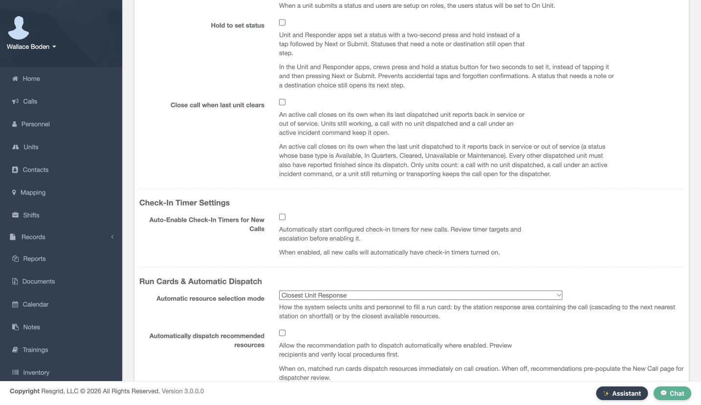
Practice
Review the current automatic-enable setting before changing any timer rules.
Step 3
Create a Personnel default
Under Add New Default Timer, choose Personnel as the Target Type. Set Duration to thirty minutes and Warning Threshold to five minutes. Leave Enabled selected. Active States can restrict when a timer applies; leaving it empty uses All States. Review the values, then select Add Timer Config. Use intervals and state filters that your department has agreed for its work.
Practice
Create a reviewed training default and record its duration, warning threshold, and active states.
Step 4
Verify the saved default and its impact
Verify the saved Personnel row in Default Timer Configurations: thirty minutes, a five-minute warning threshold, Enabled Yes, and Active States All. This default applies when an enabled timer has no matching override. The warning threshold defines how close to the due time the server marks a timer as Warning. Here that window is the final five minutes of the thirty-minute interval. An overdue timer has reached its reporting deadline. Check the resulting behavior in the applications your department uses.
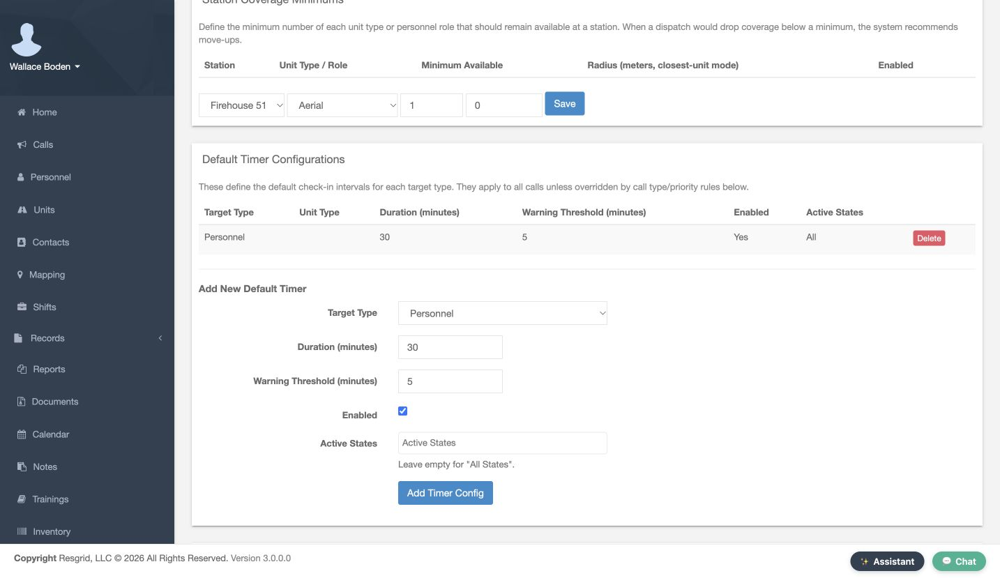
Practice
Read back the saved row. In the recorded version, Core's local countdown differs from the server warning-threshold calculation. Verify warning transitions in the apps your department uses.
Step 5
Create a call-type override
Use Add New Override for a rule tied to a call type or priority. Here Call Type ID is Rescue, Call Priority is Any, Target Type is Personnel, Duration is forty-five minutes, and Warning Threshold is ten. We clear Enabled to save this example in a disabled state. Active States is empty. Select Add Override after reviewing the scope and values.
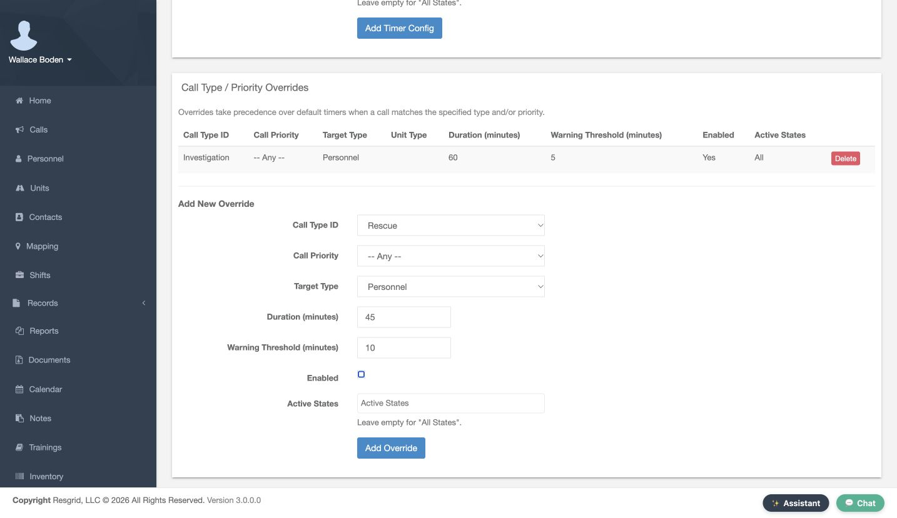
Practice
Save a disabled training override and confirm that its scope is intentional.
Step 6
Compare saved overrides with the default
Review Call Type / Priority Overrides. The Rescue row now shows forty-five minutes, ten warning minutes, and Enabled No, so that example is inactive. The existing Investigation Personnel rule is enabled for sixty minutes with a five-minute warning threshold. Matching enabled overrides take precedence over the default. We will use Investigation to test that sixty-minute rule while retaining the thirty-minute default.
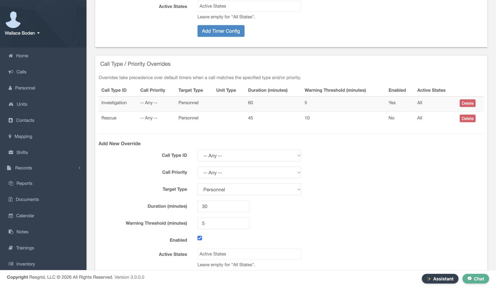
Practice
Compare the enabled Investigation override with the disabled Rescue example.
Step 7
Prepare an identifiable training call
On New Call, enter a clear training Name and choose the intended Priority and Type. Our type is Investigation and the priority is Routine. The Call Identifier gives this exercise another recognizable reference. Keep the scenario fictional and identify it clearly so other operators can distinguish it from normal work. We use a supplied fictional location for this software exercise.
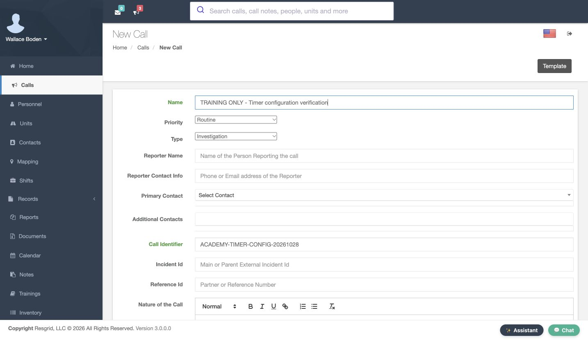
Practice
Prepare a clearly named fictional call using a type that matches the enabled override.
Step 8
Choose the training recipient
In Personnel, select Wallace Boden for this practice call. Review the selected row rather than assuming a station, role, or group contains the intended recipient. For a real rollout, test with an agreed training audience first. A call may have several participants, so the recipient scope matters when you review which personnel timers appear.
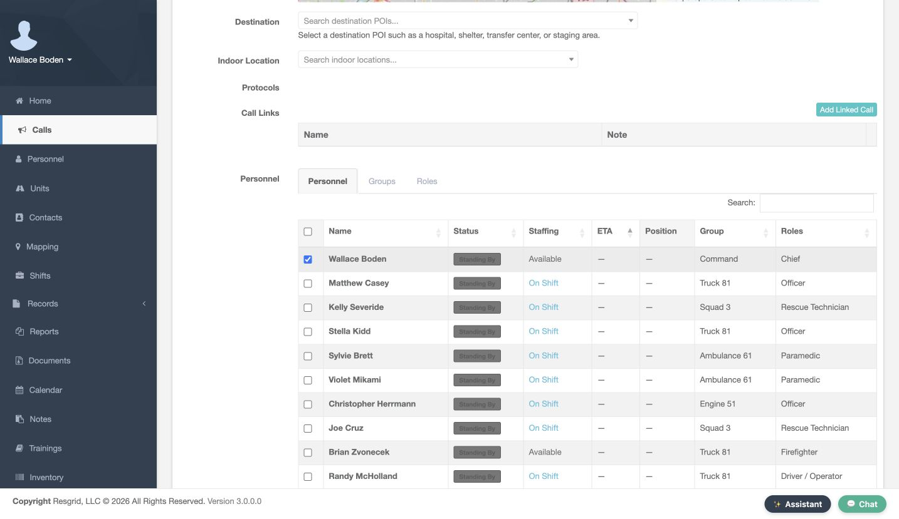
Practice
Select the intended training recipient and verify the checked row.
Step 9
Enable timers for the individual call
Near the bottom of the form, select Enable Check-In Timers. This is the per-call choice we planned while automatic enablement remained off. Review the rest of the call and its recipients, then choose Create and Dispatch Call. Saving timer configuration alone does not opt this call into timers; this checkbox makes that choice explicit for the exercise.
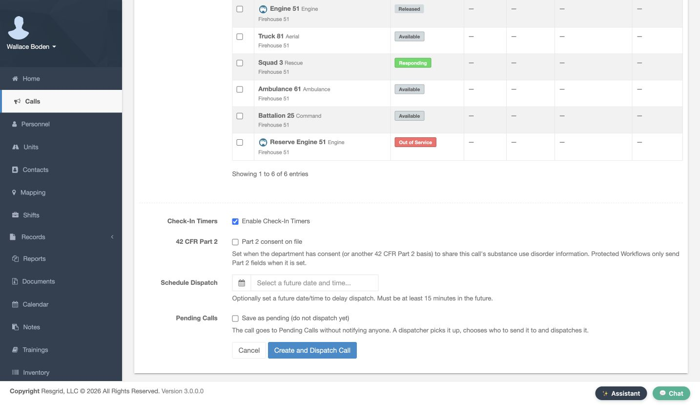
Practice
Enable timers on the reviewed practice call before creating it.
Step 10
Verify the override on the live call
Open the new call and inspect Check-In Timers. Wallace Boden has a Personnel timer, the state is OK, and Time Remaining is just under sixty minutes. This call uses the enabled Investigation override rather than the thirty-minute default. Open Show Check-In History to inspect the saved entries; this new exercise initially has none. This readback checks the effect of the configuration on an actual call.
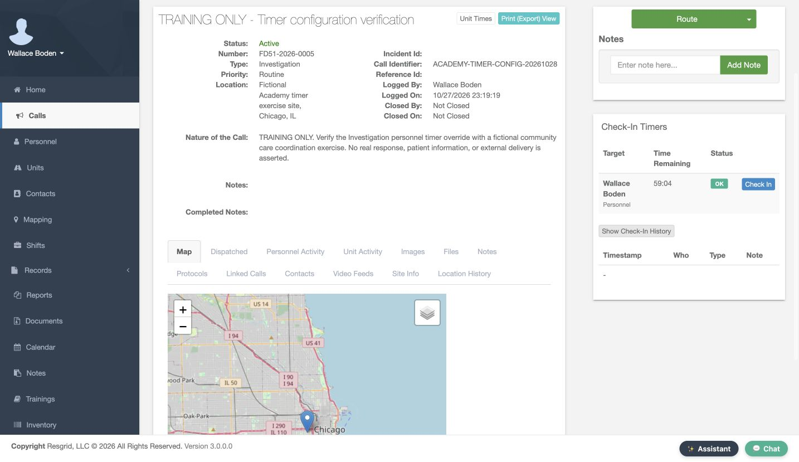
Practice
Confirm the correct target and effective interval on the newly created call.
Step 11
Add a check-in note
The Check In dialog provides a Note field. Enter a concise update under your department procedure, review it, and select Check In. Our note identifies a software practice check-in for this timer lesson. It makes no claim about physical arrival or device location. The note belongs to the check-in record, so it should explain the update clearly enough for another coordinator to understand.
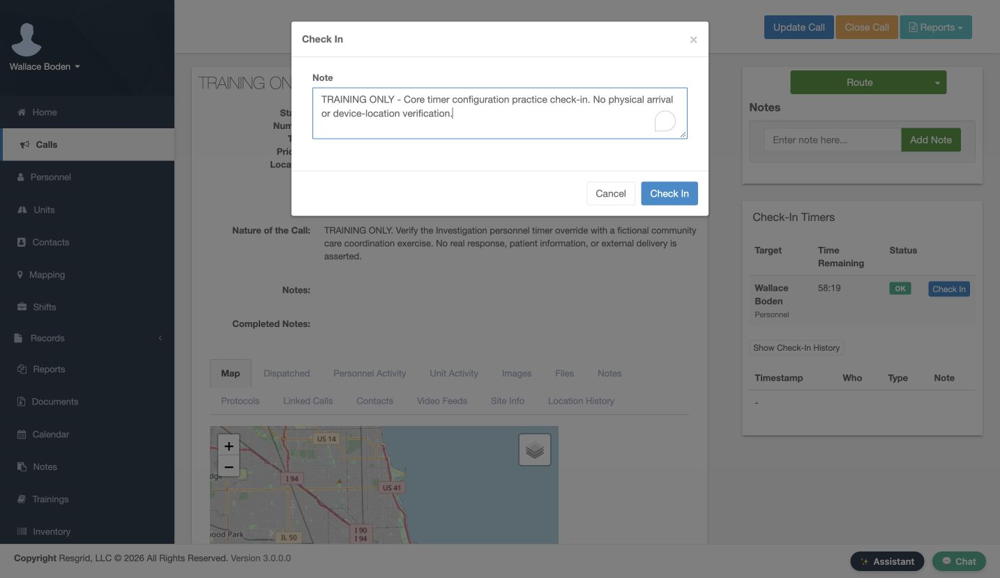
Practice
Enter and confirm one permitted software check-in note.
Step 12
Read back the saved entry
Review the timer and saved history after confirmation. The table shows Timestamp, Who, Type, and Note. Our new Personnel entry contains the exact practice note we entered. The timer has begun a new interval. Checking the saved history distinguishes a completed update from text left in a dialog. Keep status reporting, check-in reporting, and any physical safety verification under their appropriate department procedures.
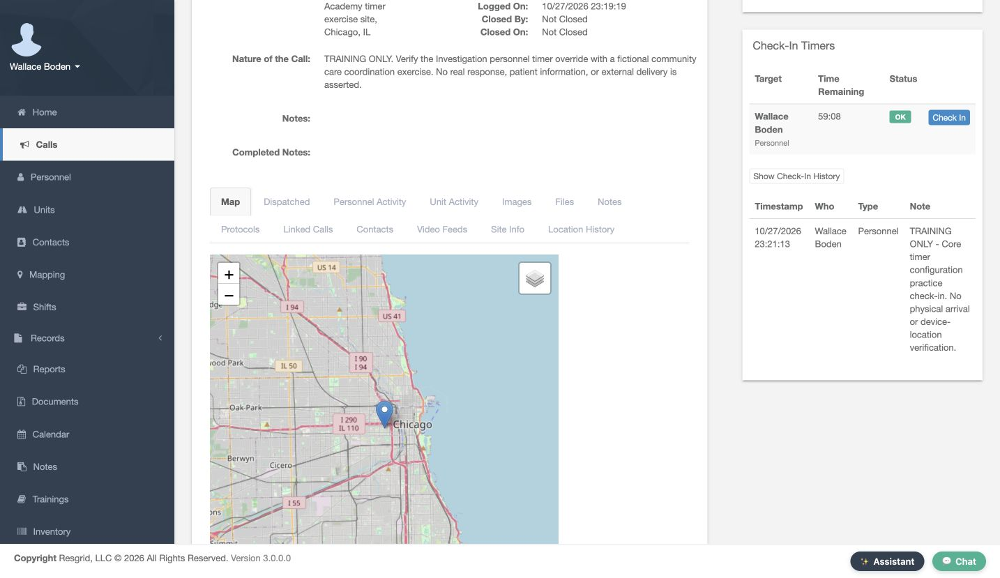
Practice
Verify the new timestamp and stored note after confirmation.
Step 13
Close the completed practice call
Finish the exercise through Close Call. Review Completed Type, Send Notification, and Completed Notes. We use Closed, leave Send Notification off for this local practice, and record a clear completion note. Then select Close Call. Review these choices for your own audience: the notification option changes whether the closing event is sent to the call participants.
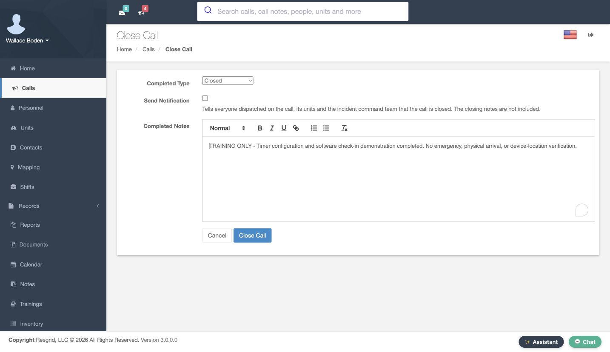
Practice
Close only the agreed practice call with reviewed notes and notification choice.
Step 14
Verify closure and retain the history
Verify that the call now shows Closed and the expected Completed Notes. Its saved check-in history remains available for review. The same configuration and verification habits apply to search and rescue, security companies, wildland contractors, and industrial response teams: choose the reporting target, agree the interval, test the matching rule, and check the resulting record before extending the setup to everyday work.
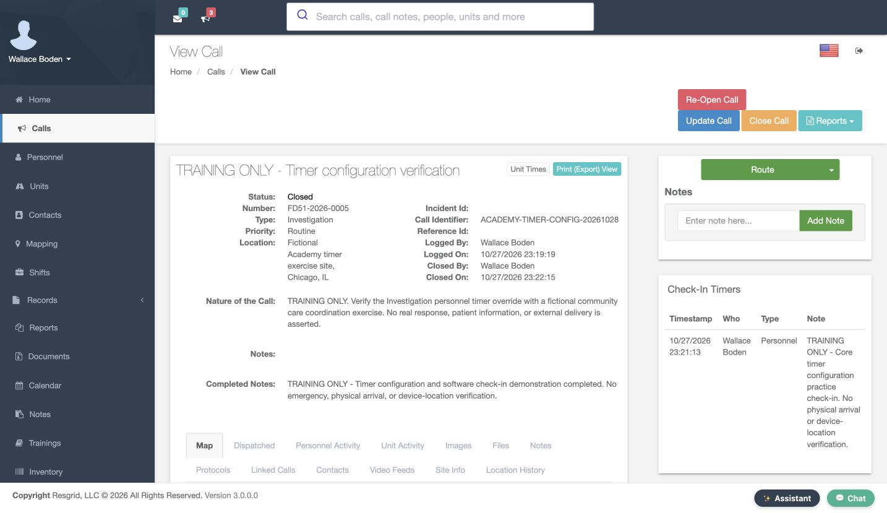
Practice
Verify the closed call and its retained check-in record.
Examples for your department
- Fire / EMS
- Coordinate agreed reporting updates during an incident.
- Community response
- Use agreed check-ins during community paramedicine and mental health response visits.
- Search and rescue
- Coordinate scheduled search-team reporting under the team procedure.
- Security
- Review agreed updates for patrol or security assignments.
- Wildland
- Coordinate contractor crew reporting during longer assignments.
- Industrial
- Record agreed updates during an industrial response exercise.
Transcript
Download transcriptRead the complete transcript
Configure check-in defaults, overrides and per-call timers Audience: Department administrators, Dispatchers and coordinators Find the check-in settings Start in Department Settings. Open Calls & Dispatch and choose Call & Dispatch Settings. This lesson follows the complete setup of a Personnel check-in rule, then tests it on one fictional call. Check-ins help coordinators organize agreed reporting updates, including community care visits and mental health response assignments. Department administrators configure the rules; operators use the resulting timers and history. Practice: Find Call & Dispatch Settings using the administrator menu. Choose automatic or per-call enablement Find Check-In Timer Settings. Auto-Enable Check-In Timers for New Calls controls whether new calls start with timers enabled. It is off in this training department. We leave it off and explicitly enable one practice call later. This separates department-wide enablement from the reporting interval and from the decision to use timers on an individual incident. Practice: Review the current automatic-enable setting before changing any timer rules. Create a Personnel default Under Add New Default Timer, choose Personnel as the Target Type. Set Duration to thirty minutes and Warning Threshold to five minutes. Leave Enabled selected. Active States can restrict when a timer applies; leaving it empty uses All States. Review the values, then select Add Timer Config. Use intervals and state filters that your department has agreed for its work. Practice: Create a reviewed training default and record its duration, warning threshold, and active states. Verify the saved default and its impact Verify the saved Personnel row in Default Timer Configurations: thirty minutes, a five-minute warning threshold, Enabled Yes, and Active States All. This default applies when an enabled timer has no matching override. The warning threshold defines how close to the due time the server marks a timer as Warning. Here that window is the final five minutes of the thirty-minute interval. An overdue timer has reached its reporting deadline. Check the resulting behavior in the applications your department uses. Practice: Read back the saved row. In the recorded version, Core's local countdown differs from the server warning-threshold calculation. Verify warning transitions in the apps your department uses. Create a call-type override Use Add New Override for a rule tied to a call type or priority. Here Call Type ID is Rescue, Call Priority is Any, Target Type is Personnel, Duration is forty-five minutes, and Warning Threshold is ten. We clear Enabled to save this example in a disabled state. Active States is empty. Select Add Override after reviewing the scope and values. Practice: Save a disabled training override and confirm that its scope is intentional. Compare saved overrides with the default Review Call Type / Priority Overrides. The Rescue row now shows forty-five minutes, ten warning minutes, and Enabled No, so that example is inactive. The existing Investigation Personnel rule is enabled for sixty minutes with a five-minute warning threshold. Matching enabled overrides take precedence over the default. We will use Investigation to test that sixty-minute rule while retaining the thirty-minute default. Practice: Compare the enabled Investigation override with the disabled Rescue example. Prepare an identifiable training call On New Call, enter a clear training Name and choose the intended Priority and Type. Our type is Investigation and the priority is Routine. The Call Identifier gives this exercise another recognizable reference. Keep the scenario fictional and identify it clearly so other operators can distinguish it from normal work. We use a supplied fictional location for this software exercise. Practice: Prepare a clearly named fictional call using a type that matches the enabled override. Choose the training recipient In Personnel, select Wallace Boden for this practice call. Review the selected row rather than assuming a station, role, or group contains the intended recipient. For a real rollout, test with an agreed training audience first. A call may have several participants, so the recipient scope matters when you review which personnel timers appear. Practice: Select the intended training recipient and verify the checked row. Enable timers for the individual call Near the bottom of the form, select Enable Check-In Timers. This is the per-call choice we planned while automatic enablement remained off. Review the rest of the call and its recipients, then choose Create and Dispatch Call. Saving timer configuration alone does not opt this call into timers; this checkbox makes that choice explicit for the exercise. Practice: Enable timers on the reviewed practice call before creating it. Verify the override on the live call Open the new call and inspect Check-In Timers. Wallace Boden has a Personnel timer, the state is OK, and Time Remaining is just under sixty minutes. This call uses the enabled Investigation override rather than the thirty-minute default. Open Show Check-In History to inspect the saved entries; this new exercise initially has none. This readback checks the effect of the configuration on an actual call. Practice: Confirm the correct target and effective interval on the newly created call. Add a check-in note The Check In dialog provides a Note field. Enter a concise update under your department procedure, review it, and select Check In. Our note identifies a software practice check-in for this timer lesson. It makes no claim about physical arrival or device location. The note belongs to the check-in record, so it should explain the update clearly enough for another coordinator to understand. Practice: Enter and confirm one permitted software check-in note. Read back the saved entry Review the timer and saved history after confirmation. The table shows Timestamp, Who, Type, and Note. Our new Personnel entry contains the exact practice note we entered. The timer has begun a new interval. Checking the saved history distinguishes a completed update from text left in a dialog. Keep status reporting, check-in reporting, and any physical safety verification under their appropriate department procedures. Practice: Verify the new timestamp and stored note after confirmation. Close the completed practice call Finish the exercise through Close Call. Review Completed Type, Send Notification, and Completed Notes. We use Closed, leave Send Notification off for this local practice, and record a clear completion note. Then select Close Call. Review these choices for your own audience: the notification option changes whether the closing event is sent to the call participants. Practice: Close only the agreed practice call with reviewed notes and notification choice. Verify closure and retain the history Verify that the call now shows Closed and the expected Completed Notes. Its saved check-in history remains available for review. The same configuration and verification habits apply to search and rescue, security companies, wildland contractors, and industrial response teams: choose the reporting target, agree the interval, test the matching rule, and check the resulting record before extending the setup to everyday work. Practice: Verify the closed call and its retained check-in record. Examples for your department Fire / EMS: Coordinate agreed reporting updates during an incident. Community response: Use agreed check-ins during community paramedicine and mental health response visits. Search and rescue: Coordinate scheduled search-team reporting under the team procedure. Security: Review agreed updates for patrol or security assignments. Wildland: Coordinate contractor crew reporting during longer assignments. Industrial: Record agreed updates during an industrial response exercise.